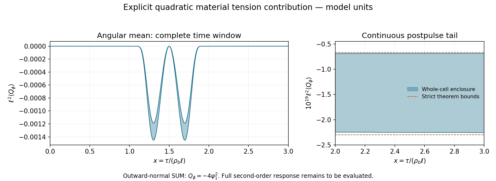

Ricardo Maldonado · independent research program · 2025–2026
Could a higher-dimensional “blast” have sparked our Big Bang?
HDBLAST asks whether a violent gravitational event in a fifth dimension could have transferred energy into our four-dimensional universe and started the hot Big Bang. The equations, code, results, failures and corrections are all public.
The idea
Our universe may behave like a thin shell (a “brane”) inside a larger five-dimensional space filled with gravity and a scalar field. If the shell sits in an unstable balance, like a ball on a hilltop, it can roll off and release energy. HDBLAST asks whether such an event could have produced the hot, dense state where the standard Big Bang story begins. It would extend that well-tested story, not replace it.

15 October 2026: interior derivatives and bulk forcing bounds: For the registered aligned quadrupole, exact rational estimates now bound every mixed first-master derivative through order three on the controlled causal triangle. A new actual-potential second-derivative bound and the reflected shell terms close this derivative calculation. Reconstruction then gives coarse continuous envelopes for all fifteen longitudinal Einstein quadratic-source components and the complete scalar source over the triangle times S3.
These are conditional bounds in the stated first longitudinal representative and adapted background frames, in model units. They do not compute the second-order response or a physical force. The earlier conditional coefficient construction retains its stated scope; quantitative U2, compatible second initial and common-gauge boundary data, and a validated coupled evolution remain unfinished. Internal AI-assisted review does not establish external peer review, novelty or a higher-dimensional Big Bang origin.
15 October 2026: continuous coordinate shell sources: The certified quadrupole now gives enclosures over 4353 continuous time cells for the actual metric trace at the shell, its proper-time derivative, and the complete one-copy coordinate scalar and isotropic Israel coefficients Sp and SK, with scalar degrees 0, 2 and 4. The metric correction has L2 norm less than 9e-13 of the one-copy material scalar source, yet changes the coordinate source signs at a scalar zero. Each of Sp and SK consequently has at least two distinct zeros inside the certified central bracket.
These results are conditional on the retained analytic inputs and the stated first longitudinal representative and derivative Taylor convention. The reduced Robin forcing norm is evaluated only for degree 4; the degree-2 Robin row is algebraic only. The norms use the background proper shell measure, and coefficient signs depend on the representative. The earlier conditional construction of the complete second coefficient retains its stated scope. No effective nonlinear amplitude or remainder, observational scale or cosmological origin is established. Independent internal checks do not replace external peer review. Full U2 remains quantitatively unresolved.
Derivation and bounds · Source and replay guide.
See the separate publication evidence for replay, CI and live-readback status. Publication evidence.

15 October 2026: quadratic material tension forcing: For the previously certified wider quadrupole (delta = 1/1000, ell = 10^-6 in model coordinates), the explicit material scalar-junction tension contribution is Q_phi = -4 psi_1^2 in the outward-normal SUM convention. It has scalar degrees 0, 2 and 4. Exact continuous enclosures give -2.3 × 10^-19 < ell^2 mean(Q_phi) < -6.7 × 10^-20 throughout 2 ≤ x ≤ 3 and 5.778 × 10^21 < ||Q_phi||_L2(dmu_0)^2 < 8.644 × 10^21 over 0 ≤ x ≤ 3, using the background proper-time measure and model units. The angular mean stays negative throughout the tail; the field vanishes on Y = 0.
This isolates the explicit material tension contribution; the complete quadratic source for bulk-coordinate unknowns and full U2 are not numerically evaluated. The earlier conditional construction of the complete second coefficient is preserved under its stated data and evolution assumptions. No effective finite amplitude, nonlinear remainder, observational scale or cosmological origin is established. Independent internal exact checks are distinct from external peer review and formal PDE verification. Earlier dated entries retain their scope. No new Zenodo version or APS submission was made.
Material tension theorem, normalization and assumptions · Reproducible calculations and independent internal checks.
Publication checks remain pending until documented in the separate final additive evidence receipt. Final additive publication evidence.


Conditional inertial shell waveform: For a newly specified wider aligned quadrupole (delta = 1/1000, ell = 10^-6 in model coordinates, T = 3ell and Z = 8ell), exact interval bounds resolve the shell response at first variation. The normalized trace H(x) = ell D(ell x) satisfies 3.2 × 10^-8 < H < 5.3 × 10^-8 throughout 2 ≤ x ≤ 3. The negative physical gain G makes the corresponding scaled physical first variation ell S negative there. At least one zero lies in each of (1.49998, 1.49999) and (1.96, 1.97); uniqueness is not asserted. The leading proper-time response coefficient satisfies 6.06 × 10^11 < C < 7.44 × 10^11 in R_epsilon = epsilon^2 C + o(epsilon^2), in the stated model normalization.
The actual-background, exact-data, gauge, regularity and whole nonlinear correction-support hypotheses remain explicit. This first-variation result does not close the full second-order nonlinear waveform or provide an effective epsilon or nonlinear remainder bound. No observational scale or higher-dimensional Big Bang origin is established. Internal AI-assisted review and finite checks are distinct from external peer review and formal PDE verification. Earlier entries retain their dated scope. No new Zenodo version or APS submission was made.
Waveform theorem, normalization and assumptions · Reproducible calculations and independent reviews.
Publication checks remain pending until documented in the separate final additive evidence receipt. Final additive publication evidence.

Conditional first-variation shell waveform: For the same specified narrow aligned quadrupole (delta = 1/1000, ell = 10^-10 in model coordinates), a continuous 4098-cell enclosure resolves the physical scalar’s linear first variation. The normalized trace H differs from its explicit comparator by less than 1.0000004 × 10^-7 on 0 ≤ x ≤ 3; the negative physical gain reverses its sign. The leading proper-time response coefficient now satisfies 6.06 × 10^15 < C < 7.44 × 10^15 in R_epsilon = epsilon^2 C + o(epsilon^2).
The retained background, exact-data, gauge, regularity and nonlinear support hypotheses remain explicit. The post-pulse estimate |H| < 4.752 × 10^-14 on 2 ≤ x ≤ 3 is a small-tail bound. No finite-amplitude nonlinear waveform, observed time scale or higher-dimensional Big Bang origin is established. Next: a wider state with a validated background and an effective nonlinear remainder estimate. Internal AI-assisted review and finite checks are distinct from external peer review. Earlier entries retain their original scope. No new Zenodo version or APS submission was made.

Waveform theorem, normalization and assumptions · Reproducible calculations and independent reviews · Continuous-cell enclosure data.
Conditional quantitative shell-response bound: For the retained regular branch at delta = 1/1000 and one newly specified narrow aligned quadrupole (ell = 10^-10 in model coordinates), a free-wave comparison and exact-rational bounds give 10^15 < C < 4 × 10^17 for the leading proper-time response coefficient in R_epsilon = epsilon^2 C + o(epsilon^2). The estimate controls the physical derivative at the shell, with its positive boundary inertia.
This is a coarse conditional analytic enclosure in the stated model normalization. It gives no numerical waveform, effective nonlinear amplitude range, observational scale or evidence for a higher-dimensional Big Bang origin. The background, exact-data, gauge, regularity and full nonlinear support hypotheses remain explicit. Internal AI-assisted reviews and finite arithmetic checks are distinct from external peer review. Earlier entries retain their checkpoint scope. No new Zenodo version or APS submission was made.
Quantitative theorem, normalization and assumptions · Reproducible arithmetic and independent reviews.
Conditional nonzero physical shell response: For one explicitly specified aligned quadrupole with nonzero displacement and velocity, the full coupled Einstein–scalar shell equations now imply a nonzero physical first scalar response. In the retained conditional exact nonlinear family, a squared scalar-response measure over a finite intrinsic proper-time window has a strictly positive leading quadratic coefficient.
The result retains the stated background, exact-data, support, regularity and finite-region hypotheses. It is qualitative: no numerical waveform, response magnitude, effective amplitude threshold or exact nonlinear first-arrival time is supplied. Internal AI-assisted review and finite reproducible checks are distinct; external peer review, global stability and a higher-dimensional origin of the Big Bang are not established. Earlier dated entries retain their original scope. No new Zenodo version or APS submission was made.
Physical response theorem and assumptions · Derivations and reproducible checks.
Exact nonlinear shell evolution at fixed finite regularity: Under the stated background, support and exact-data hypotheses, the selected aligned quadrupole has a small exact Einstein–scalar family on both copies of the controlled positive-cone region for a prescribed finite shell-interaction interval. The construction satisfies the physical shell laws and constraints, with H^14/H^13 evolution and C² parameter dependence in a lower norm.
This is internally reviewed conditional mathematics. The actual first-arrival time and a nonzero gauge-invariant shell response remain to be calculated. No global stability, observational agreement or higher-dimensional origin of the Big Bang is established. The analytic proofs and finite algebra checks are documented separately; no new Zenodo version or APS submission accompanies this checkpoint. Earlier dated entries retain their original scope.
Theorem, proof and assumptions · Reproducible checks and scope.
All-angular linear shell-contact estimate — 14 October 2026 (Pacific): On the registered Einstein–scalar background and a fixed controlled positive-cone collar, the full sixteen-field linear system now has a positive auxiliary Sobolev control estimate independent of angular frequency and of the full tensorial SO(4) cutoff. A bounded change of field variables removes the complete nonsymmetric twelve-row Robin matrix without changing the common wave principal part. Smooth compatible data and forcing give a unique smooth linear solution; the same method controls subsidiary constraint propagation.
Smooth boundary forcing is handled by an explicit lift with its declared regularity cost. No estimate for arbitrary L² Neumann forcing is claimed. The positive norm is analytic control, not physical gravitational energy or a stability result. A separate exact local change of nonlinear boundary variables converts all twelve physical and normal-gauge laws to homogeneous Neumann conditions while preserving the common quasilinear wave principal symbol. This is an algebraic reduction; an exact nonlinear perturbation family through shell contact remains open. The previously established exact initial-data family at fixed high finite Sobolev regularity and the earlier complete second-order coefficient are preserved.
Primary-literature comparisons do not transfer other models' theorems automatically. Internal AI-assisted review is not external peer review; external novelty and a higher-dimensional Big Bang origin remain unestablished. This is a GitHub-only checkpoint, with no new Zenodo version or APS submission. Artifact identifiers use 15 October UTC; this work began 14 October Pacific time. Earlier dated entries retain their original scope.
Estimate, assumptions and reproducible checks · Linear proof · Exact nonlinear boundary reduction.
Complete second-order coefficient through shell contact (14 October 2026): For the specified copy-even commuting quadrupole packet, the unchanged first-order scalar reconstruction cannot satisfy the quadratic degree-four angular equation. The continuation therefore keeps all metric and scalar fields, with their complete quadratic bulk sources and physical shell boundary conditions.
Under the stated background, localization and initial-data hypotheses, a boundary-preserving relative harmonic gauge and a convergent characteristic construction give a smooth complete second Taylor coefficient through first shell contact on a controlled positive-cone collar. It includes scalar degrees zero, two and four and tensor degree two. The construction satisfies all Einstein–scalar equations, induced-field matching and Israel/scalar shell laws through second order, with propagation of the sourced constraints.
This is a conditional coefficient construction. An exact nonlinear family through contact, estimates uniform over all angular modes, nonlinear stability and a higher-dimensional Big Bang origin remain unestablished. Internal AI-assisted proof review is not external peer review, and external novelty is not established. This is a GitHub-only checkpoint, with no new Zenodo version or APS submission. Earlier dated entries, including earlier entries from 14 October, retain their original scope.
Construction, assumptions and reproducible checks · Complete coefficient proof.
Quadratic tensor forcing and a tensor sector through shell contact (14 October 2026): For the specified quadrupole Y = n₁² − n₂² in the fixed longitudinal first-order gauge, the complete gravity-plus-scalar quadratic source has a nonzero transverse traceless angular component wherever either scalar amplitude is nonzero: its coefficient is 16u² + 8v²/3. Thus the two contributions cannot cancel there. A velocity-only packet can have zero source on its initial slice and develop it later.
For even first-order master data, the corresponding forced second-order tensor sector has homogeneous Neumann shell data and a conditional evolution through first contact on a controlled collar. The full coupled scalar and tensor second-order boundary problem and a nonlinear solution through contact remain open.
Derivation, assumptions and reproducible checks. These statements use the specified background, first-order gauge and parity. They establish no Big Bang origin or external novelty; internal proof review is not external peer review. This is a GitHub-only checkpoint, with no new Zenodo version or APS submission. Earlier dated entries retain their original scope.
Exact localized initial data and short precontact evolution (14 October 2026): Under the stated background assumptions and weighted nonlinear estimates, the reflection-invariant quadrupole sector admits a family of exact nonlinear initial data at a chosen high finite Sobolev regularity. A sufficiently short precontact Cauchy evolution keeps the fields equal to the background in a collar of the shell, so its junction conditions remain unchanged there.
The nonlinear boundary problem through shell contact remains open. The theorem concerns high finite regularity; no spatial smoothness to all orders, Big Bang conclusion or external novelty is established. The proof received internal AI-assisted review, which is not external peer review. Proof, assumptions and limits. This is a GitHub-only checkpoint, with no new Zenodo version or APS submission. Earlier dated entries retain their original scope.
Formal continuation by reflection symmetry (14 October 2026): For the restricted commuting quadrupoles of the localized checkpoint, simultaneous diagonalization makes the first-order data invariant under coordinate reflections. These reflections force all ten local symmetry compatibility pairings to vanish at every finite constraint order. Under the stated localization hypotheses, recursive constraint solving and averaging over the reflection group construct localized formal initial data to all orders. This is a formal series: convergence, an exact nonlinear solution and full evolution through shell contact are not established. Derivation, assumptions and limits.
Localized second-order initial data (14 October 2026): On the time-symmetric regular Einstein–scalar slice, the ten symmetry tests are necessary and sufficient for compactly supported second-order initial-data corrections for smooth packets of fixed reflection parity in an annulus away from the shell and cone vertex, under the stated background and localization assumptions. The note gives an explicit correction for A = B = diag(1,−1,0,0). The correction vanishes near the shell, so the initial second-order junction conditions hold with zero shell displacement and tilt.
An areal-radius-weighted monopole identity fixes a spherical metric moment for first-order packets in the reconstruction gauge. Its negative sign for velocity packets is a statement in that gauge: the moment changes under first-order gauge transformations and is not yet a physical mass or energy observable.
Full second-order evolution through shell contact, quadratic interface sources, convergence of the higher-order formal series and nonlinear existence remain open. This result does not establish a higher-dimensional Big Bang origin. Technical note · Calculations and supporting material · Results and limits. This is a GitHub-only checkpoint; Zenodo 23335485 remains the latest archived spectral edition. No new Zenodo version or APS submission accompanies it.
Shell symmetry obstruction (13 October 2026): On the fixed regular Einstein–scalar two-interior shell, the completed nonlinear Noether identity retains both gravitational boundary terms, moving embeddings and the single common shell action. An independent ADM constraint calculation verifies a nonzero second-order obstruction for an explicit compact rotating quadrupole: it cannot be the tangent to a parameter-C² exact classical family satisfying full shell matching. The example can be chosen among smooth non-gauge linear solutions that reach the shell.
Within degree-two data with one fixed radial profile and reflection parity, all ten necessary Lorentz symmetry tests vanish exactly when the displacement and velocity matrices commute, [A,B]=0. Passing these tests does not establish second-order solvability or nonlinear existence. The result establishes no nonlinear growth, stability, Big Bang origin or APS readiness. Normal and optimized portable replay each check 81 positive algebra checks and 21 wrong-formula controls, counted separately.
Technical note · Proofs and portable replay · Results and limits. This is a GitHub-only research checkpoint. Zenodo 23335485 remains the latest archived spectral edition; no new Zenodo edition or APS submission accompanies this continuation.
Conditional evolution through shell contact (13 October 2026): On the fixed regular Einstein–scalar background, an explicit characteristic construction gives a smooth family from compact radial data in a sufficiently thin annulus, with a fixed finite set of angular harmonics of degree at least two. The family includes paired solutions that activate the shell after first arrival on a controlled finite slab. Both reflection parities satisfy the complete induced-field, Israel and scalar junctions without harmonic division, and nonzero states are not pure gauge. An explicit pair with the same reflection parity has a nonzero total physical symplectic pairing, conserved after contact with the odd moving-shell cut term included. The pairing is weakly nondegenerate on this smooth thin-annulus data image.
This conditional linearized result concerns a new collar-supported family. It does not continue the earlier near-cone flux pair to contact or establish a nonzero local shell flux, physical energy, unrestricted angular completion, nonlinear stability, cosmological evidence, external originality or APS readiness. Normal and optimized portable replay each check 84 positive exact identities and 14 wrong-formula controls, counted separately.
Technical note · Proofs and portable replay · Results and limits. This is a GitHub-only checkpoint. Zenodo 23335485 remains the latest archived spectral edition; no new Zenodo edition or APS submission accompanies this continuation.
Earlier local coupled cone evolution (13 October 2026): A regular wave equation now reconstructs smooth solutions of all linearized Einstein–scalar equations across the cone. Compact initial data give two non-gauge solutions with nonzero local symplectic flux. Both reflection parities satisfy the shell junctions before the waves reach the shell. The physical Cauchy symplectic form is nondegenerate on the image of smooth compact master data supported in a sufficiently small spatial ball.
Evolution to shell contact of that original near-cone flux pair remains open; the new collar family above has a separate after-contact proof. The full physical state space and nonlinear stability remain open. This antisymmetric symplectic flux is not a positive energy or reheating calculation, and a higher-dimensional Big Bang origin remains unestablished.
Technical note · Proofs and reproducible code · Results and limits. This is a GitHub research continuation. Zenodo 23335485 remains the preceding archived spectral edition; no new APS submission was made.
Current and physical-domain audit (13 October 2026): The Einstein–scalar action now supplies an explicit symplectic current, including unequal spectral values and the doubled-shell balance. Under stated asymptotic hypotheses for actual solutions, its null-cone limit is a scalar symplectic flux. Exact flat test-field examples show that fixed-time radial closure does not imply zero characteristic flux, and that radial and inertial energy completions can differ. The physical state space of the registered gravitational model remains open.
Technical note · Derivations and code · Results and limits. This continuation is published on GitHub; Zenodo 23335485 remains the preceding archived spectral edition. No new APS submission was made. A higher-dimensional Big Bang origin remains unestablished.
Conditional spectral result (13 October 2026): At every fixed 0 < delta ≤ 0.002, the entire scalar spectrum in both reflection parities is separated strictly from zero in the specified self-adjoint, finite-energy regular-cone realization. The proof gives a positive bound as a function of the background; it does not assign a numerical value or a uniform bound as delta approaches zero. An action calculation, including the moving-shell boundary terms, verifies the local kinetic coefficients of generic even and odd scalar modes. Exceptional harmonics are treated separately. The tensor sector has one even massless radial profile, and every nonzero tensor mass obeys m_T ≥ 3H_b/2.
This concerns the regular branch near phi = +1 of the same fixed action. The original hilltop shell remains a distinct unstable solution; no evolution connecting the two is proved. Global physical-state coverage, admissible diffeomorphisms and cone symplectic flux retain the declared assumptions. No nonlinear stability, reheating mechanism or higher-dimensional Big Bang origin is established. Normal and optimized portable Python replay each pass 103 exact checks and 30 wrong-formula controls, counted separately. Proof, assumptions and portable replay · Claim ledger and gap functional.
Verified publication (13 October 2026): Zenodo 23335485, version 2026.10.13-regular-shell-spectra, contains 35 files / 454,964,066 bytes. It preserves all 33 files from 23294979 and adds the new scientific capsule and overview. Complete public readback verified every filename, size and MD5/SHA256 checksum. Publication proof and complete inventory.
Scalar-boundary result (11 October 2026): an exact response identity and sharper error bounds certify the registered model's regular local branch for every 0 < delta ≤ 0.002, extending the earlier 1.09155 × 10−7 guarantee. The proof gives strict shell-matching monotonicity, RT ≤ −H² < 0, under its stated hypotheses. The uniform scalar and curvature remainder constants satisfy Keta < 3.196 and KH < 0.254. Curvature is below that of the separate complete boundary theory with scalar-independent detuning: H² − Hconstant² < −0.000423 delta² throughout that interval. These conditional mathematical results concern the specified local branch; dynamical stability and a higher-dimensional Big Bang origin remain unestablished. Proof, exact certificates and reproducible calculations · Bounded primary-literature update · Verified Zenodo edition 23294979. The 8 October checkpoint remains preserved.
Verified publication (11 October 2026): Zenodo 23294979, version 2026.10.11-scalar-response-monotonicity, contains 33 files / 454,129,865 bytes in the preserved concept DOI family 17088132. It retains all 31 files from edition 23244754 and adds the scalar-response scientific capsule and overview. Saved metadata and every file's name, size, MD5 and SHA256 were checked before publication and by complete anonymous public readback afterward. Publication proof and complete inventory.
Completed research (8 October 2026 UTC): 98,304 saved-endpoint comparisons. Normal and optimized runs compare every retained node at eta = -4 and -3.5 with exact prescribed flow from its exact saved incoming state at eta = -4.5. Nine scientific files agree byte for byte, independently checked. Maximum Cartesian L1 discrepancy bounds are U < 2.520 × 10−16 and W < 3.158 × 10−15. The 1e-18 gate concerns target-enclosure radii, not saved-state errors. Exact endpoint results and finite-weight bounds.
Separate conditional analytic models: the stable flat five-dimensional half-space response/noise model and its incident-packet extension passed independent analytic review. An exact four-dimensional continuum replica prevents dimensional identification from these observables. In the static linear incident model, smooth compact continuum packets away from threshold with zero bound-mode position and velocity projections produce transient brane storage and eventual reflection, without permanent capture or thermalization. Model assumptions and reviews.
Retained endpoints do not recover the unsaved dense path. Full continuous pressure/contact/time/momentum/UV certification remains UNRESOLVED, metric calibration FAIL, higher-dimensional Big Bang cause NOT_ESTABLISHED and external novelty NOT_ASSESSED. Fresh normal/optimized portable replay and numerical/bulk-model CI passed. Final-document-head CI and live site deployment are recorded separately in the final delivery receipt. The preserved 8 October Zenodo edition is 23244754 (31 files / 453,646,943 bytes). Replay and CI evidence. Current research and publication status.
Earlier findings (through 7 Oct 2026)
| Result | Status |
|---|---|
| A specific 5D Einstein–scalar model is fixed in advance: W(φ)=1−φ+φ³/3, shell tension σ=2W+δ(1+cφ), δ=0.001 | Definition |
| Within the model, the registered shell solution exists (computer-assisted proof, locally unique; a statement about the equations, not about nature) | Certified (conditional) |
| An unstable scalar mode, m² ≈ −7.7179 H², growth e1.657 Hτ (numerically the only one). No unstable mode in the tensor, vector or special-harmonic sectors (mode stability, not full linear stability). | Certified (mode) / Numerical (uniqueness) / Exact (other sectors) |
| A closed-form 4D theory matches the 5D spectrum to ~10⁻⁶ and predicted the turnaround before the 5D simulation confirmed it | Exact + Numerical |
| Full nonlinear 5D evolution: two fates, relaxation toward an empty de Sitter brane (endpoint not yet reached in the simulations) or reversal and collapse | Numerical |
| No hot, radiation-filled universe from the shell's own homogeneous, classical motion (no added matter) | Negative |
| Corrected late-time static solution (numerical); a proposed matter extension with an exact energy-exchange law | Numerical / Exact (proposal) |
| July 2026 gravitational-radiation claim withdrawn after audit | Withdrawn |
| Pulsar-timing “knee” signature: screened on public data, not derived from the 5D model; strict registered test failed | Screening / Negative |
| New (27 Sept): the corrected end state is linearly stable in the tested sectors; two independent methods agree | Numerical (audited) |
| New (27 Sept): exact series for the end state through eighth order, confirmed to 30–40 digits | Exact |
| New (27 Sept): particle production and six other heating routes give no radiation era in the registered model; leftover vacuum energy is the obstacle | Negative (conditional) |
| New (27 Sept): an added tension term cancels the leftover vacuum, but “dark radiation” stays above observational limits so far | Inconclusive |
| New (28 Sept): with the tension tuned to cancel the leftover vacuum (a model change) and a stand-in energy-transfer formula, a radiation-dominated phase appears; “dark radiation” is 7.3% of the radiation at one transfer rate, within the conservative limit | Numerical (conditional, fine-tuned) |
| New (30 Sept): at a stronger transfer rate the “dark radiation” falls to 2.1%, within the strict current limit (3%). But the phase lasts under half an expansion e-fold before leftover negative vacuum energy recollapses the shell, needs the tension tuned to about 1 part in 10⁴, and still uses the stand-in formula | Numerical (model-internal, conditional) |
| New (30 Sept): replacing the stand-in with particle production derived from the matter extension: with particle masses below the 5D gravity scale, “dark radiation” stays far larger than the radiation (no steady state reached in 32 runs) | Inconclusive, leaning negative |
| New (30 Sept): the same test at the registered δ = 0.001 is not completed (numerical breakdown diagnosed but not yet fixed) | Inconclusive |
| New (1 Oct): an energy bound includes both decay radiation and particles that have not yet decayed. In two locally screened archived crossings, the budget remains far below the radiation target at the tested endpoint. | Analytical bound / Exploratory calculation, conditional |
| New (1 Oct): an executed saved-trajectory audit finds an earlier radiation-dominated sampled interval of about 0.314 e-fold in the finer Y = 2 run under a new diagnostic that avoids cancellation by negative vacuum. Its later plateau fails this diagnostic. The earlier registered verdict is preserved. | Post hoc diagnostic |
| New (1 Oct): the particle-mode integrator passes 90 exact pulse checks and 30 fine normalization checks, supplying a verified control for the next physical test. | Registered numerical control |
| New (1 Oct, quantum modes): modes on the archived source-free tuned shell give an integrated count 0.0503% below the corrected estimate for the declared state and momentum band. Quantum coherence adds 10.96% to the particle-only scalar current and reverses the relative pressure’s sign. Ten registered variants and independent mode checks pass. | Numerical: prescribed background, relative stress |
| New (1 Oct, quantum matching): the proposed matter loop requires additional potential and intrinsic-curvature terms in the shell action. The curved-shell absolute source and finite matching coefficients remain unresolved. | Analytical EFT requirement |
| New (1 Oct Pacific / 2 Oct UTC, curved-source readiness): eight reconstruction controls pass after a documented numerical repair. The archived interpolation and initial state have separate ultraviolet obstructions; smoother fits show initial-boundary derivative sensitivity. Exact-rational subtraction checks and 18 independent toy evolutions pass. | Readiness audit: absolute curved source unresolved |
| New (2 Oct): a flat-background quantum source through a mass-zero crossing passes eight registered variants, exact scattering, energy/work and independent pressure-trace checks. Potential and curvature matching are fixed at a stated reference. | Numerical benchmark: prescribed background, fixed convention |
| New (2 Oct): omitting curvature matching makes pressure drift with the regulator despite excellent energy conservation. The direct physical-mode representation shows cutoff convergence and obeys an exact finite-cutoff trace identity. Finite-regulator sources still change by several percent. | Analytical and numerical checks |
| New (2 Oct, massive de Sitter sources): Four common-reference quantum-vacuum cases pass 57 checks, a separate proper-time calculation and an exact direct-pressure check at one curved point. Nineteen classical integrations resolve a tiny stationary response and correct its roundoff-limited sign. | Exact algebra / Numerical, internally checked |
| New (2 Oct, stationary quantum closure): Both quantum sources enter a regular bulk-and-shell solve: 48 roots pass 1,584 corrected checks and independent comparisons. Resolved nonlinear feedback occurs only where the declared gravity hierarchy screen fails. | Numerical stationary model, physical limits unresolved |
| New (2 Oct, causal response): Independent forced modes pass 36 finite-cutoff comparisons and 17 controls. Both tested pulses retain negative variance response after their sources vanish. | Fixed geometry; stress, stability and heating untested |
| New (2 Oct, matched stress): Independently computed density and pressure pass 180 core comparisons, finite-cutoff trace/contact checks and a separate energy ledger. Stress tail bounds and raw modes are retained. | Linear response on fixed geometry; heating untested |
| New (3 Oct, source-operator prerequisite): Two independent methods certify moment and source-primitive integrals at nine registered momenta, with uniform analytic model bounds and a conservative whole-interval radius covering both implementations below 1.373 × 10⁻²⁸. | Conditional certificate; full stress/conservation certificate unresolved |
| New (5 Oct): Exact finite-band stress/error kernels bound the analytic source-truncation contribution throughout the interval. A normalized state change between probes shows why the incoming state needs a separate bound. | Conditional exact mathematics; full numerical certificate unresolved |
| New (7 Oct): Two independent methods enclose the prescribed vacuum response at all nine registered momentum probes; all 36 complex enclosures intersect and meet the 10⁻²⁰ gate. | Target certificate at fixed probes; full certificate unresolved |
Previous result (7 October 2026): incoming-state error enclosed at every saved node. Four authenticated archives contain 49,152 capsule-node occurrences. Their original binary80 values are decoded exactly and compared with a certified prescribed target at every node. The normalized W = w/epsilon discrepancy has a Cartesian L1 upper bound below 1.914 × 10⁻¹⁴ on the coarse grid and 5.776 × 10⁻¹⁶ on the fine grid; normalized U is below 1.571 × 10⁻¹⁶. The larger coarse W values cluster near the upper momentum cutoff. This measured difference is not a proof of continuum convergence or its mechanism. Exact result, reproduction and limits.
The original incoming-state error is now ENCLOSED at the saved nodes. Exact continuous-time error transport gives density, pressure, work and pressure-time-integral bounds for twelve fixed finite-weight sums, conditional on identical subsequent physical forcing and full contacts. It does not enclose the later numerical trajectory, continuous momentum integral, contact defects or ultraviolet tail. Eight scientific artifacts reproduce byte for byte in normal and optimized Python; a separate serialized-output audit independently checks all node summaries. The full twelve-case certificate remains UNRESOLVED, metric calibration FAIL, the Big Bang origin NOT_ESTABLISHED, and external novelty NOT_ASSESSED.

A bounded literature refresh uses 22 searches and selected primary passages from eight papers. The conditional dimensional-identifiability argument shows why equal complete effective inputs can give equal observed probability laws. The physical next step needs an action-derived prediction that differs from specified four-dimensional rivals.
Previous checkpoint (7 October 2026): error bounds for the prescribed vacuum response. Two independent methods compute the response to two smooth sources, starting from the specified Bunch–Davies vacuum condition before the sources turn on. They cover nine momentum probes and two normalized response quantities: 18 cases and 36 complex enclosures. All 36 pairs of enclosures intersect. Their largest complete error radii are below 1.555 × 10⁻²¹ and 3.138 × 10⁻²³, within the fixed 10⁻²⁰ gate. The zero-momentum probe is the analytic continuation of the response. Result, reproduction and limits.
A separate certificate bounds only the prehistory source representation and coefficient error. With identical later forcing and full contacts, their contributions to scaled pressure and density are below 1.625 × 10⁻¹⁸ and 4.094 × 10⁻²¹ throughout the time interval [−9/2, −7/2], at momentum cutoffs 64, 128 and 256. These continuous bounds exclude phase and solver arithmetic across the momentum band. At that earlier stage, retained binary80 mode errors were NOT_ENCLOSED; the later comparison above encloses them at every saved incoming node, the full twelve-case certificate remains UNRESOLVED, and metric calibration remains FAIL. A higher-dimensional Big Bang origin remains unestablished.
Previous result (7 October 2026, Pacific): conditional incoming-state transfer. Exact density and pressure formulas retain the phase of homogeneous state errors when forcing and full contacts are identical. First-order normalization does not bound the state amplitude. With normalization drift independently controlled, a proved incoming-state amplitude bound gives conditional finite-band stress-error bounds. The direct operators also give an exact signed pressure time primitive. No actual state enclosure, physical trajectory or full twelve-case certificate is supplied; the ultraviolet tail remains outside the result. Metric calibration remains FAIL and a higher-dimensional Big Bang origin remains NOT_ESTABLISHED. Result, proof and limits.
Previous result (5 October 2026 UTC): exact finite-band stress/error mathematics. The analytic source Taylor-truncation contribution at K=256 is below 5.5 × 10⁻²⁸ for scaled density and 2.2 × 10⁻²⁵ for scaled pressure throughout the declared time interval. These are conditional bounds for one error component. Incoming-state, arithmetic, contact and quadrature errors still need separate bounds; a smooth normalized state can pass all nine probes and conservation while changing integrated stress. Three exact verification routes and a clean six-run archive replay pass. The full twelve-case certificate remains UNRESOLVED and metric calibration stays FAIL. Result, proof and limits · Standalone exact replay.
Previous result (3 October 2026, Pacific): conditional source-operator certificate. Two independently implemented enclosure methods pass all 1,170 moment rows and 130 source-primitive rows per route for two smooth sources, 64 panels and nine registered momenta. The largest conservative whole-interval enclosure radius across both implementations is below 1.373 × 10⁻²⁸, within the fixed 10⁻²⁶ limit. Analytic model bounds cover real momentum k ∈ [0,256]; complete computed widths are certified at the nine probes. The full twelve-case pressure/contact conservation certificate remains unresolved and metric calibration stays FAIL. A higher-dimensional cause of the Big Bang remains NOT_ESTABLISHED; external mathematical novelty is NOT_ASSESSED. Research manuscript: result and limits · Standalone archive replay. A fresh standalone archive replay reproduces both numerical payloads and scientific frames exactly.
Fresh archive reproduction evidence.
Previous result (2 October 2026, Pacific): active-source ledger diagnosis. Two independently implemented calculations identify sampling error in the retained conservation ledger during the registered active-source interval. All twelve consistency cases pass; eight meet the fixed attribution threshold. A fresh standalone archive replay reproduces every registered scientific value exactly. Small signed residuals involve cancellation and are not certified total-error bounds. Earlier metric calibration remains FAIL; continuum accuracy, coupled evolution and a higher-dimensional cause of the Big Bang remain unestablished. Measured result and limits · Exact fresh reproduction.
Earlier verified publication (7 October 2026, Pacific): main-family record 23114217, DOI 10.5281/zenodo.23114217, is published with 23 files / 440,222,994 bytes. Authenticated and direct public readback confirm the published record; all attachment bytes matched size, MD5 and SHA256 before publication. Its semantic version 2026.10.03-verified-source-operator archives the frozen 3 October packet. That frozen archive excludes the later 5 and 7 October mathematics. The proof guide discloses the exact reviewed Notes HTML serialization and preserved original literal comparison failure. Previous main 22347452 and separate companion 23111008 are retained. Automatic GitHub archiving stays OFF; no new integration-toggle inspection is claimed.
Previous source-free ledger diagnosis: Two independent implementations identify time-integration error after the compact source ends. All twelve consistency cases pass; eight meet the fixed attribution threshold. The previous metric calibration remains FAIL. That result concerns the interval after forcing; the active-source interval is checked separately above. Coupled dynamics and heating remain unresolved. Measured results and reproducible evidence.
Registered metric response: scientific FAIL. A memory-only repair completes all twelve primary observations and four independent evolutions at 103,400 KiB peak memory, within the unchanged 256 MiB limit. Fifty-nine conservation endpoint/refinement checks still fail. The earlier quadrature and resource failures remain preserved. Reproduction-control success does not establish calibration. General metric, actual-root, bulk/state response, stability and heating remain unresolved. Failure evidence and next steps · Standalone reproduction.
Registered matched stress: The new test calibrates both physical minimal density and pressure with complete fixed-reference subtraction and an independent conservation ledger. Negative after-pulse relative density describes coherent vacuum polarization; it does not establish heating or negative total energy. Metric response and coupled evolution remain open. Results and scope · Self-contained reproduction.
Earlier causal calibration: That variance-only experiment checked scalar memory on fixed de Sitter geometry and proposed the separate stress test now completed above. It calculated no heating. Results and limits · Self-contained reproduction.
The paired quantum sources now close a stationary bulk-and-shell problem numerically. Only the smallest tested positive coupling passes the sampled gravity hierarchy screen; its curvature shift is tiny. Stability, causal evolution and heating remain open. Stationary results and limits · Fresh reproduction.
New (2 Oct, massive de Sitter sources): Both quantum sources are derived from one action in the declared finite convention. These are static vacuum benchmarks and a classical differential response; physical mass and coupling choices, causal time-dependent backreaction and heating remain open. Results and scope · Independent internal review · Fresh reproduction.

Smooth curved-background quantum-source control: a separately registered K384 follow-up passes all 13 acceptance groups. The pressure change from K192 to K384 is 0.2291% of its global comparison scale. The original experiment remains FAIL: its flat control passed, while curved pressure exceeded its original cutoff tolerance. The calculation retains coherent stress and scalar source and checks their common-action exchange when the mass squared touches zero. This is finite-cutoff evidence on a prescribed background; coupled shell evolution, backreaction and thermal radiation remain unestablished. Results and preserved outcomes · Reproduce the calculation · Claims and next steps.
The new curved-source readiness audit quantifies two obstacles to extending the finite-band calculation: geometry interpolation and initial-state preparation. Agreement in the field and expansion rate does not establish reliable high derivatives. Its controls pass; the absolute source on the archived shell, backreaction and a hot Big Bang remain unestablished. Measured results and limitations.
The registered homogeneous model has not produced a hot Big Bang. Tuned variants using a stand-in transfer formula briefly meet the earlier radiation criterion and then recollapse. The new quantum-mode calculation reproduces the corrected integrated count closely for its declared setup, while showing that coherence matters for the scalar force and pressure. Its endpoint excitations are not a radiation fluid. The 2 October checkpoint supplies an absolute source in a fixed matching convention for a flat-space pulse, including the curvature contribution to pressure. Curved-shell matching, coupled evolution, decay and thermalization remain unresolved. Read the matched-source checkpoint. Read the quantum-mode checkpoint; the earlier 1 October diagnostic retains its original scope.
What comes next
Next numerical study: certify the evolution between saved times, full contacts, time integration, continuous momentum quadrature and the ultraviolet remainder. The incoming-state and later-endpoint errors are enclosed at the retained nodes; they do not recover the unsaved dense path or certify the continuum between nodes. Preserve the twelve cases and inherited 2 × 10⁻⁸ gate before another unchanged metric calibration. Endpoint result and remaining terms.
Stability
Is the corrected late-time solution stable, and does the blast actually end there?
Particle production
Can the blast's energy become particles and a lasting radiation era, with backreaction included?
Reliable simulations
Control the numerical errors in long five-dimensional evolutions.
New ingredients
Screen matter couplings, bulk “dark radiation”, bubble-universe constructions and a contracting (collapse) phase.
For the hypothesis to become credible it needs a working mechanism, a unique quantitative prediction, independent reproduction, peer review and observational tests. It can fail at any step, and failures will be published.
Explore the research
- All-node retained-state comparison and exact fixed-weight error transport: included errors, reproduction and limits
- Bunch–Davies prehistory response and continuous representation certificate: two independent methods, included errors and limits
- Current status: latest verified research, limits and actual Zenodo publication
- Conditional incoming-state theorem: exact transfer, finite-band bounds and state-normalization limits
- Finite-band stress/error theorem: conditional analytic truncation bounds, state counterexample and exact proof replay
- Conditional source-operator certificate: measured bounds, premises and limits · standalone archive replay
- Completed active-source diagnosis and standalone archive: registration, original failure, disclosed repair and exact reproduction
- Plain-language guide
- Program map: model, chronology, claims ledger and falsification tests
- Research checkpoints: reports, code, data and internal AI referee reviews (not external peer review)
- All Zenodo records
- 27 Sept 2026 checkpoint: stability, exact series, particle production, new mechanisms
- 28 Sept 2026 tuned-vacuum test and 30 Sept 2026 checkpoint: radiation phase, dark-radiation limits, fine-tuning
- 1 October 2026 checkpoint: energy bounds, radiation duration and exact mode controls
- 1 October quantum modes: results, coherence, quantum matching, data and reproduction
- 2 October matched quantum source: pressure matching, regulator and cutoff tests, data, figures and reproduction
Cite
Verified publication (8 October 2026 UTC): 23244754, DOI 10.5281/zenodo.23244754, version 2026.10.08-later-state-and-bulk-response, contains 31 files / 453,646,943 bytes in concept 17088132. All 29 previous files are retained; fresh complete size/MD5/SHA256 streams passed before and after publication, with final public readback at 2026-10-08T17:52:21.331322+00:00. The additions are a compact supplement and overview; the full source replay package is pinned separately at immutable commit 52126b98d3e4b24680017fa2537b8449bd75d94f. Publication proof and complete inventory.
Preserved previous edition (7 October 2026):
The main-family edition 23228395, DOI 10.5281/zenodo.23228395, contains 29 files / 451,598,148 bytes. Complete attachment streams matched every filename, size, MD5 and SHA256 before and after publication. It preserves all 27 files from 23225288 and adds a compact scientific supplement and a revised original overview. The scientific supplement contains all registered checkpoint code, exact proofs, compact outputs, independent reviews and original figures. The complete replay package and full node-level checkpoint evidence remain pinned to immutable GitHub commit 13a30ef46f5c90c1b01ae83b609db65fd0f8a709, including the original replay inputs and both large node-level payloads. The saved publication proof preserves the witnesses and earlier editions.
The preserved previous main-family edition 23225288 (DOI 10.5281/zenodo.23225288) contains 27 files totaling 448,387,915 bytes. Every file was fully streamed and matched its size, MD5 and SHA256 before and after publication. It preserves the earlier 23 files and adds the Ward, incoming-state and BD prehistory archives plus an overview. The saved publication proof and offline verifier record the metadata, checksums and preserved earlier editions.
Maldonado, R. HDBLAST: higher-dimensional blast research program. Zenodo, doi:10.5281/zenodo.17088132 (all versions). Previous published main version: 23114217, 2026.10.03-verified-source-operator. Separate static-branch companion: 23111008, preserving the original September study, concept 22922927. Each Zenodo record states its own licence.
Specialists are invited to check the work and report errors through GitHub issues.